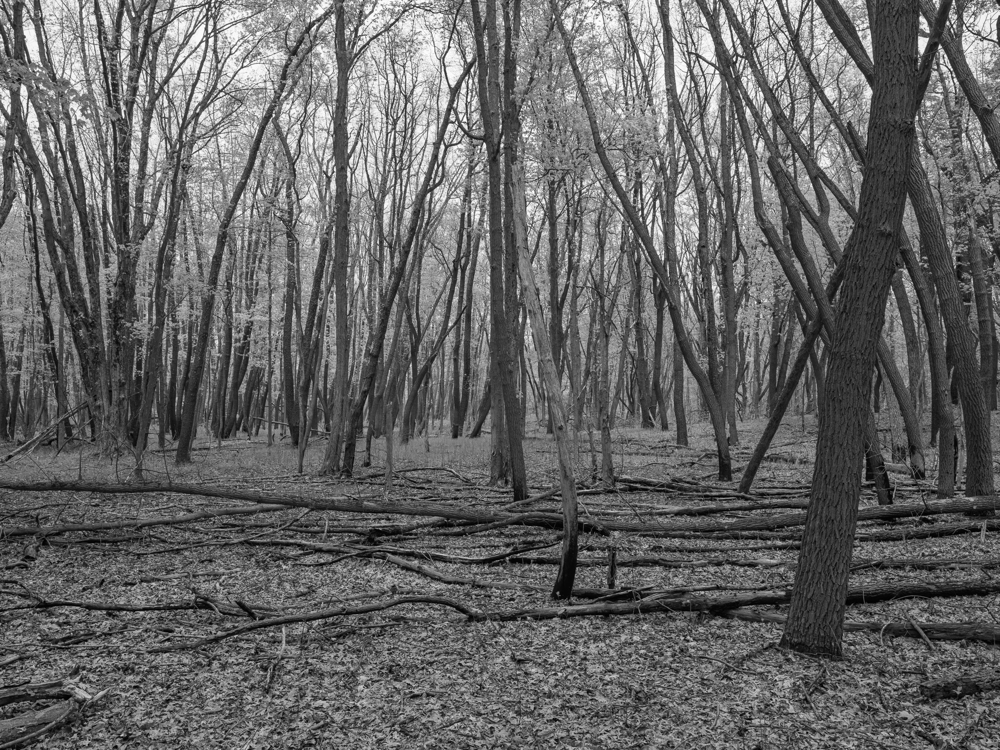
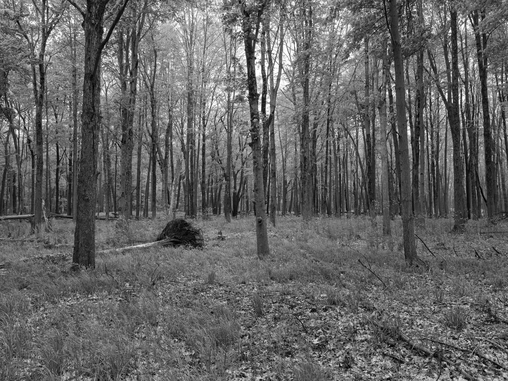
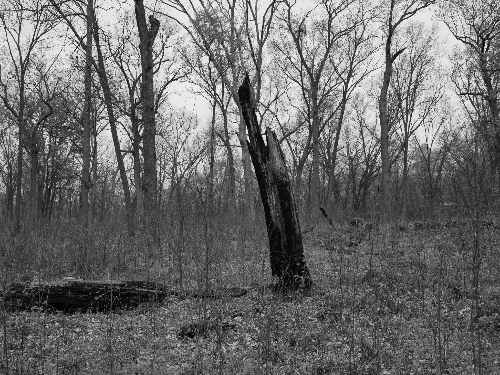

Public Lands Institute
Sites
Archive
About
Oak Openings Metropark
OH
Oak Openings Metropark 1 · 2026-05-06
_DSF1723.jpg
Oak Openings Metropark 2 · 2026-05-06
_DSF1732.jpg
Oak Openings Metropark 3 · 2026-05-06
_DSF1736.jpg
Oak Openings Metropark 4 · 2026-05-06
_DSF1742.jpg
Oak Openings Metropark 5 · 2026-05-06
_DSF1750.jpg
Oak Openings Metropark 6 · 2026-05-06
_DSF1758.jpg

Oak Openings Metropark 7 · 2026-05-06
_DSF1766.jpg

Oak Openings Metropark 8 · 2026-05-06
_DSF1772.jpg

Oak Openings Metropark 9 · 2026-05-06
_DSF1779.jpg
View all 9 images
← Magee Marsh Wildlife Area
Ford Marsh Unit, Detroit River International Wildlife Refuge →